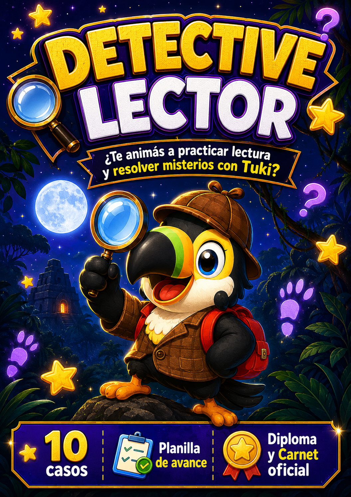
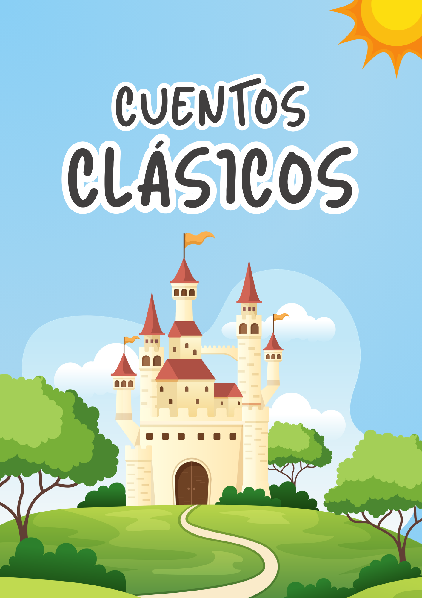

Cada recurso está diseñado para usar directamente con tu hijo. Podés imprimirlos o usarlos en pantalla. Descargalos y guardalos en tu teléfono para tenerlos siempre a mano.

Detective Lector
Detective Lector
Fichas de sospechosos para practicar lectura de forma entretenida y con suspenso.
⬇️ Descargar

10 Cuentos clásicos
10 Cuentos clásicos
10 cuentos con fichas de comprensión para trabajar la lectura de forma significativa.
⬇️ Descargar